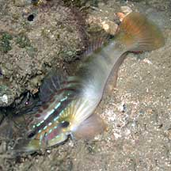
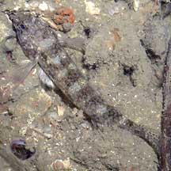
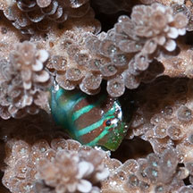
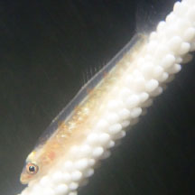

| Phylum Chordata
> Subphylum Vertebrate > fishes |
Gobies
Family Gobiidae
updated
Sep 2020
if
you learn only 3 things about them ...
 Gobies are the largest family of marine fishes with about
1,800 species! Gobies are the largest family of marine fishes with about
1,800 species!
Some gobies live with snapping shrimps, others in corals.
They
are well camouflaged. Watch your step! |
|
Where
seen? Gobies are abundant on many of our shores. But they
are hard to spot. At the slightest sign of danger, they bolt into
burrows or dart under rocks. Even in plain sight, they blend in with
the sand and mud. So watch your step or you might squash a tiny fish!
Besides those that are found in pools, another kind of familiar goby
found on our shores are the mudskippers that hop around on mud and rocks.
What are gobies? Gobies may be
small but they are superlatives in several senses. They belong to
possibly the largest family of marine fishes. According to FishBase:
the family Gobidae has 212 genera and 1875 species! Gobies are found
in tropical and subtropical areas, including some freshwater species.
Because they are small, shy and well camouflaged, new goby species
are being discovered all the time! The Family includes among the smallest
fish and vertebrate: Trimmatom nanus, which reaches only 0.8-1cm
long and is found in the Chagos Archipelago and Maldives.
Features: 5cm or smaller, but some may grow to 10cm. Many gobies are adapted
for bottom dwelling, feeding mainly on small animals. Most are not
fast, long-distance swimmers. Their bodies are cylindrical rather
than streamlined, and they lack a swim bladder. They usually have
large eyes high up on the head to keep a look out for danger from
above. The pelvic fins are often fused to form a suction pad to grip
surfaces.
What do they eat? As a group,
gobies eat a wide variety of things from small animals to fishes.
Many filter microscopic animals from the sand. Some hover in water
to eat plankton.
Goby babies: In some goby species,
the male guards the eggs and the young stay close to dad for a time
after hatching. Mums rarely participate in parental care. The elongated,
club-shaped eggs are stuck onto a surface, usually inside a burrow,
crevice, empty shell or other safe place. Some species may change
gender, and a few may be simultaneous hermaprodites (each fish has
both male and female reproductive organs). |

Gobies can be colourful!
Chek Jawa, Aug 02 |

But most are well camouflaged.
Changi, Jul 05 |

The Broad barred acropora goby
lives only in Acropora corals.
Pulau Hantu, Feb 10 |
Fishy friend: The shrimp goby
lives in the same burrow with a snapping shrimp. With keener eyesight,
the goby keeps a look-out while the shrimp busily digs out and maintains
their shared home. The shrimp is literally constantly in touch with
the goby with at least one of its antennae always on the goby. When
the goby darts into the burrow, the shrimp is right behind it! More
about this shrimp-fish partnership.
Other tiny gobies found in coral reefs live in close association with
other animals, taking on the colours and patterns of their 'partners'
for perfect camouflage. Such tiny gobies may be found among the branches
of sea fans, or on sponges and corals. The Broad barred acropora goby lives only in Acropora corals.
Some gobies (Gobiosoma spp.) perform 'cleaning' functions on
larger fishes and other marine creatures. These gobies are usually
colourful. |
| Role in the habitat: Being relatively
abundant in the ecosystems they inhabit, these small fishes are believed
to play a vital part in the food chain. In fact, the absence of gobies
may be a sign of danger to the habitat, as this
study of reefs found. |
Human uses: Gobies are generally not eaten, although it
is said that large mudskippers are eaten
in places like Taiwan. Some of the more colourful gobies are collected
for the live aquarium trade.
Status and threats: None of our
gobies are listed among the threatened animals of Singapore. However,
like other
creatures of the intertidal zone, they are affected by human activities
such as reclamation and pollution. Over-collection by hobbyists can
also have an impact on local populations. |
| Unidentifed Gobies
on Singapore shores |

Seen on a sea whip.
Chek Jawa, Jun 23
Photo shared by Kelvin Yong on facebook. |
|
|
| Shrimp-gobies: living
with snapping shrimps |
| Found in living branching
hard corals |
Family
Gobiidae recorded for Singapore
from Helen K. Larson, Zeehan Jaafar and Kelvin K. P. Lim. 29 June 2016. An updated checklist of the gobioid fishes of Singapore
^from WORMS
+Other additions (Singapore Biodiversity Record, etc)
| |
Acentrogobius
caninus (Green-shouldered goby)
Acentrogobius cyanomos
Acentrogobius janthinopterus (Green-spotted goby)
Acentrogobius viridipunctatus (Papillose goby)
Amblyeleotris fontanesii (Giant shrimp goby)
Amblyeleotris gymnocephala (Masked or Red-margined shrimp
goby)
Amblyeleotris periophthalma
Amblygobius buanensis=Amblygobius decussatus
Amblygobius phaleana
Amblygobius sphynx
Amblygobius stethophthalmus (previously A. bynoensis) (Head-stripe goby)
Amoya gracilis (Slender amoya)
Amoya moloanus (Bar-cheek goby)
Apocyptodon (see mudskippers)
Arcygobius baliurus (Isthmus goby)
Asterropteryx semipunctatus (Starry goby)
Aulopareia unicolor
Bathygobius sp. (Frill-fin
gobies)
Bathygobius fuscus (Common frill-fin goby)
Bathygobius meggitti (Meggitt's frill-fin goby)
Boleophthalmus (see mudskippers)
Brachyamblyopus brachysoma (Short Eel-goby)
Brachygobius kabiliensis (Mangrove
bumblebee goby)
Brachygobius sabanus (Lesser bumblebee goby)
Bryaninops amplus (Gorgonian goby)
Bryaninops loki
Callogobius hasselti (Hasselt's flap-headed goby)
Callogobius maculipinnis (Ostrich goby)
Cryptocentroides insignis (Slender crested goby)
Cryptocentrus albidorsus
Cryptocentrus caeruleomaculatus (Blue-spotted
shrimp-goby)
Cryptocentrus cinctus (Yellow shrimp-goby)
Cryptocentrus cyanospilotus (Bluespot shrimp-goby)
Cryptocentrus cyanotaenia (Lagoon shrimp-goby)
Cryptocentrus leptocephalus (Slender-lined shrimp-goby)
Cryptocentrus leucostictus (Saddled prawn-goby)
Cryptocentrus maudae (Saddled
shrimp-goby)
Cryptocentrus melanopus
Cryptocentrus pavoninoides (Peacock shrimp-goby)
Cryptocentrus sericus (Ventral-barred shrimp-goby)
Cryptocentrus strigilliceps
Dotsugobius bleekeri=Lophiogobius bleekeri
Drombus globiceps (Kranji drombus)
Drombus ocyurus (Blue-marked drombus)
Drombus triangularis(Brown
drombus or Brown shore goby)
Eugnathogobius illotus=^Calamiana illota (Dirty-face brackish goby)
Eugnathogobius polylepis
Eugnathogobius siamensis=Pseudogobius siamensis (Siam stream goby) freshwater
goby
Eugnathogobius variegatus (Stripe-face
brackish goby)
Eviota queenslandica (Queensland coral-goby)
Eviota storthynx (Rosy coral-goby)
Exyrias belissimus (Barred high-fin goby)
Exyrias puntang (Estuarine high-fine or Polkadot-fin goby)
Favonigobius melanobranchus (Black-throat sand-goby)
Favonigobius opalescens (Opalescent sand-goby)
Favonigobius reichei (Reiche's sand-goby)
Glossogobius aureus (Golden flat-head goby)
Glossogobius circumspectus (Circumspect flat-head goby)
Glossogobius giuris (Tank goby)
Glossogobius sparsipapillus (Papillose flat-head goby)
Gnatholepis anjerensis
Gnatholepis cauerensis
Gobiodon citrinus
Gobiodon heterospilos=Gobiodon albofasciatus (White-striped acropora goby)
Gobiodon histrio (Broad-barred
acropora goby)
Gobiodon micropus
Gobiodon quinquestrigatus
Gobiodon sp. 11
Gobiopterus panayensis
Gobiopterus birthwistlei (Lesser glass-goby)
Gobiopterus brachypterus (Greater glass-goby)
Gobiopsis macrostoma (Big-mouth barbel-goby)
Hemigobius hoevenii (Banded or Common mullet-goby)
Hemigobius melanurus=^Hemigobius mingi (Blue-eyed mullet goby)
Istigobius decoratus (Decorated lagoon-goby)
Istigobius diadema (Black-lined lagoon-goby)
Istigobius goldmanni (Black-spotted
lagoon-goby)
Istigobius ornatus (Ornate lagoon-goby)
Lubricogobius ornatus (Ornate slippery goby)
Macrodontogobius wilburi (Wlibur's goby)
Mahidolia mystacina (Smiling goby)
Mugilogobius chulae (Two-spot mangrove goby)
Mugilogobius fasciatus (Broad-barred mangrove goby)
Mugilogobius mertoni (Yellow-chequered mangrove goby)
Mugilogobius platystomus
Mugilogobius rambaiae (Queen of Siam mangrove goby)
Mugilogobius tigrinus (Narrow-barred mangrove goby)
Myersina adonis
Myersina crocatus
Myersina filifer
Myersina macrostoma (Flag-finned goby)
Odontamblyopus rubicundus
Oligolepis acutipennis
Oplopomops diacanthus
Oplopomus caninoides
Oplopomus oplopomus (Pretty lagoon-goby)
Oxymetopon amblyopinus
Oxymetopon compressus
Oxuderces (see mudskippers)
Oxyurichthys longicauda=Oxyurichthys uronema (Fine-blotched tentacle-goby)
Oxyurichthys microlepis (Black-spotted goby)
Oxyurichthys papuensis
Palutrus scapulopunctatus
Pandaka rouxi=Pandaka pygmaea
Parachaeturichthys polynema
Paragobiodon echinocephalus (Spiny-headed goby)
Parapocryptes (see mudskippers)
Paratrypauchen microcephalus (Small-eyed worm-goby)
Parioglossus palustris
Periophthalmodon (see mudskippers)
Periophthalmus (see mudskippers)
Priolepis nuchifasciata (Nape-banded coral-goby)
Priolepis semidoliatus (Half-banded coral-goby)
Psammogobius biocellatus (Crocodile
flat-head goby)
Pseudapocryptes (see mudskippers)
Pseudogobiopsis oligactis=^Eugnathogobius oligactis (Big-mouth
stream goby) freshwater goby
Pseudogobius avicennia (Avicennia fatnose goby)
Pseudogobius javanicus (Java
or Javanese fatnose goby)
Pseudogobius melanostictus (Black-spotted fatnose goby)
+Pseudogobius yanamensis
Ptereleotris hanae
Redigobius bikolanus=Redigobius isognathus
Rhinogobius giurinus (Oriental river goby) introduced
freshwater goby
Scartelaos (see mudskippers)
Sicyopterus macrostetholepis
Silhouettea cf. nuchipunctata (Vanishing sand-goby)
Stigmatogobius borneensis (Borneo knight-goby)
Stigmatogobius pleurostigma (Peach knight-goby)
Stigmatogobius sadanundio(Grey
knight-goby)
Stigmatogobius sella(Sharp-nosed knight-goby)
Taenioides gracilis (Bearded eel-goby)
Tomiyamichthys russus
Trypauchen pelaos
Trypauchen vagina (Pink mud goby)
Trypauchenichthys sumatrensis
Trypauchenichthys typus
Valenciennea muralis (Mural glider-goby)
Valenciennea puellaris
Valenciennea strigata
Yongeichthys madraspatensis
Yongeichthys nebulosus=^Acentrogobius nebulosus (Shadow goby)
Yongeichthys virgatulus
|
| |
Previously
in Family Gobiidae now in Family Eleotridae |
| |
Bostrychus sinensis (Chinese gudgeon)
Butis amboinensis
Butis butis (Crimson-tipped gudgeon)
Butis gymnopomus
Butis humeralis (Flathead gudgeon)
Butis koliomatodon (Crested gudgeon)
Eleotris fusca
Eleotris melanosoma
Giuris margaritaceus
Hypseleotris leuciscus
Odonteleotris canina
Ophiocara porocephala (Snakehead gudgeon)
Oxyeleotris marmorata (Marbled gudgeon)
Oxyeleotris urophthalmus (Sinuous gudgeon) |
|
Links
- Mudskippers
Ng, Peter K. L. & N. Sivasothi, 1999. A
Guide to the Mangroves of Singapore II (Animal Diversity).
Singapore Science Centre. 168 pp.
- Gobies,
mudskippers and their relatives Lim, Kelvin K. P. & Jeffrey
K. Y. Low, 1998. A
Guide to the Common Marine Fishes of Singapore. Singapore
Science Centre. 163 pp.
- Family
Gobiidae and Mudskippers
Tan, Leo W. H. & Ng, Peter K. L., 1988. A
Guide to Seashore Life. The Singapore Science Centre,
Singapore. 160 pp.
- Family
Gobiidae (Gobies) from FishBase:
Technical fact sheet on the family, including fact sheet on
Trimmatom nanus the smallest fish and vertebrate
- Tiniest
reef fishes warn of risks to reefs on the wild shores of singapore
blog.
References
- Tan Heok Hui & Kelvin K. P. Lim. 31 July 2019. New Singapore record of the goby, Pseudogobius yanamensis. Singapore Biodiversity Records 2019: 88 ISSN 2345-7597, National University of Singapore.
- Daisuke Taira. Decorative lagoon-goby in the Singapore Strait. 31 August 2018. Singapore Biodiversity Records 2018: 90 ISSN 2345-7597. National University of Singapore.
- Tan Heok Hui (Changi), Zeehan Jaafar (Tuas). 28 Jul 2017. Brown drombus goby found in burrows with snapping shrimps. Singapore Biodiversity Records 2017: 98-99.
- Helen K. Larson, Zeehan Jaafar and Kelvin K. P. Lim. 29 June 2016. An updated checklist of the gobioid fishes of Singapore. Raffles Bulletin of Zoology Supplement No. 34: 744–757.
- Marcus F. C. Ng. 31 August 2016. Saddled shrimp-goby At Sentosa, Cryptocentrus maudae. Singapore Biodiversity Records 2016: 111
- Koh Kwan Siong. 29 July 2016. Bluespot shrimp-goby off Pulau Hantu, Cryptocentrus cyanospilotus. Singapore Biodiversity Records 2016: 100
- Tan Heok Hui. 6 March 2015. Green-spotted goby at West Coast marsh pond, Acentrogobius janthinopterus. Singapore Biodiversity Records 2015: 34
- Gina Tan & Zeehan Jaafar. 24 April 2015. New record of ornate slippery goby Lubricogobius ornatus in Singapore. Singapore Biodiversity Records 2015: 53
- Tan Heok Hui. 30 January 2015. Nape-banded coral goby from Terumbu Berkas, Priolepis nuchifasciata. Singapore Biodiversity Records 2015: 22
- Ria Tan & Kelvin K. P. Lim. 26 December 2014. Lagoon shrimp-goby at eastern Johor Straits, Cryptocentrus cyanotaenia. Singapore Biodiversity Records 2014: 334.
- Tan Heok Hui, Low Bi Wei & Jonathan Ho. 11 July 2014. Lesser bumblebee goby in Upper Seletar Reservoir, Brachygobius sabanus. Singapore Biodiversity Records 2014: 185.
- Helen K. Larson, Zeehan Jaafar and Kelvin K. P. Lim. 29 Feb 2008. An annotated checklist of the gobioid fishes of Singapore. Raffles Bulletin of Zoology 56(1): 135–155
- Tan Heok Hui. 30 Jan 2015. Nape-banded coral goby from Terumbu Berkas. Singapore Biodiversity Records 2015: 22
- Zeehan Jaafar & Helen K. Larson. 24 Apr 2015. New record of ornate slippery goby Lubricogobius ornatus in Singapore. Singapore Biodiversity Records 2015: 53
- Tan Heok Hui. 6 Mar 2015. Green-spotted goby at West Coast marsh pond. Singapore Biodiversity Records 2015: 34.
- Jeffrey Low K. Y., Jani Isa Thuaibah Tanzil & Zeehan Jaafar, 2009. Some note-worthy fishes observed in the Singapore Straits. Nature in Singapore, 2: 77–82.
- Heng Pei Yan & Kelvin K. P. Lim. 15 November 2013. Some noteworthy reef fishes at Pulau Hantu: Ventral-barred shrimp-goby, Cryptocentrus sericus. Singapore Biodiversity Records 2013: 65-67.
- Larson, Helen
K and Kelvin K. P. Lim. 2005. A
Guide to Gobies of Singapore. Singapore Science Centre.
164pp.
- Wee Y.C.
and Peter K. L. Ng. 1994. A First Look at Biodiversity in Singapore.
National Council on the Environment. 163pp.
- Allen, Gerry,
2000. Marine
Fishes of South-East Asia: A Field Guide for Anglers and Divers.
Periplus Editions. 292 pp.
- Kuiter, Rudie
H. 2002. Guide
to Sea Fishes of Australia: A Comprehensive Reference for Divers
& Fishermen
New Holland Publishers. 434pp.
- Lieske,
Ewald and Robert Myers. 2001. Coral
Reef Fishes of the World
Periplus Editions. 400pp.
- Lim, S.,
P. Ng, L. Tan, & W. Y. Chin, 1994. Rhythm of the Sea: The Life
and Times of Labrador Beach. Division of Biology, School of
Science, Nanyang Technological University & Department of Zoology,
the National University of Singapore. 160 pp.
|
|
|